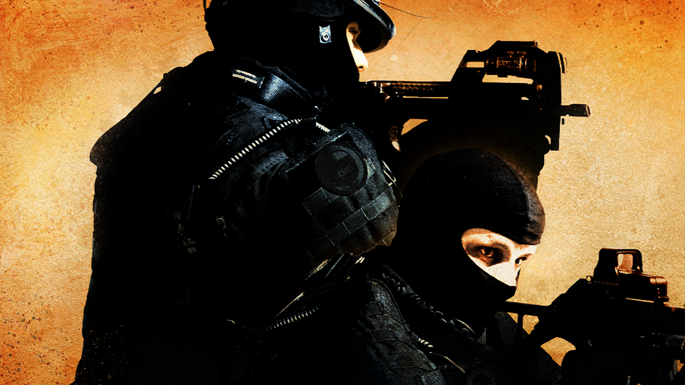

How to go Pro in Counter Strike: Global Offensive - Crimson Tyrant Original January 7, 2014
Counter Strike: Global Offensive is one of the most intense competitive first person shooters of all time, where one small mistake could lead to a bomb blowing up in your face. In this video, seasoned veteran and Counter Strike master Nick will show you some "tips" to survive.
